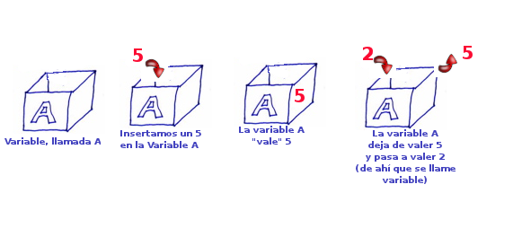
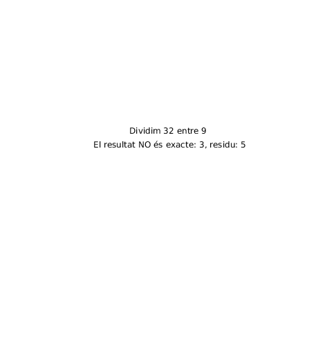
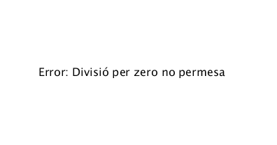
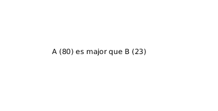

Tema 3. El llenguatge Java
Introducció
Una vegada estudiat el teorema del programa estructurat juntamnet amb els diagrames de flux i psuedocodi, passem a veure aquestos conceptes teòrics en un llenguatge de programació d'alt nivell concret com és el llenguatge de programació Java.
En aquest tema veurem la sintaxis bàsica de Java: paraules reservades, dades, variables, constants, identificadors i com també es codifiquen les estructures de control vistes al tema anterior en llenguatge Java.
Dades, Variables i identificadors.
Mirem primer quines són les definicions de dada i variable
Dades i Variables
Una dada per una altra banda és: "la representació convencional de la informació en un format adequat perquè puga ser processada, comunicada o interpretada per mitjans manuals o automàtics."
Per un altre costat una variable és: "una expressió matemàtica, símbol que representa una quantitat el valor numèric de la qual no s'especifica."
En qualsevol llenguatge de programació existeixen una sèrie d'elements com variables, constants, funcions, llibreries. Aquestos elements requereixen d'un nom per tal de distingir-lo de la resta. Aquestos noms es diuen identificadors
Identificadors
Un identificador és una cadena alfanúmerica que representa o dona un nom a un element dins del nostre programa. Els identificadors de les variables són noms que s'inventa el programador i s'hauria de tindre en consideració al següent màxima:
Normes per construir identificadors en Java
Quan triem el nom per identificar a una variable, ha de ser significatiu, és a dir, que el mateix identificador ja done alguna pista de que és el que representa.
- 1. Estan formats per caracters i/o digits.
- 2. No poden començar per digit.
- 3. No poden usar els següents caracters especials:
+ - * / = % & # ! ? ^ “ ‘ ~ \ | < > ( ) [ ] { } : ; . , - 4. No poden ser cap paraula reservada de Java
- 5. Els identificadors de Java distingeixen entre majúscules i minúscules (case sensitive)
- 6. No hi ha límit a la llargària de l'identificador, però és aconsellable utilitzar una grandària òptima entre 4 i 15 caracters.
Paraules reservades
Uns dels principals identificadors que ens trobarem a tot llenguatge de programació són les paraules reservades. Per entendre-ho, el conjunt de paraules reservades d'un llenguatge de programació són el diccionari de totes les paraules que té aquest llenguatge. Aquetes paraules reservades no poden utilitzar-se per cap altra cosa més, per exemple, si Java té la paraula reservada public, el programador no podrà crear cap variable utilitzant l'identificador public.
Paraules reservades a Java
| abstract | continue | for | new | switch | assert | default | goto |
| package | sychronized | boolean | do | if | private | this | break |
| double | implements | protected | throw | byte | else | import | public |
| thows | case | enum | instanceof | return | transient | catch | extends |
| int | short | try | char | final | interface | static | void |
| finally | long | strictfp | volatile | const | float | native | super |
| while |
Tipus de dades
Tot llenguatge de programació porta una sèrie de tipus de dades predefinits que es poden usar. Aquestos tipus de dades també es coneixen com a tipus primitius o tipus simples.. Java defineix 8 tipus diferents de dades: byte, short, int, long, char, float, double i boolean. Aquestos tipus es poden agrupar en quatre blocs:
- Nombres enters: on podem trobar el byte, short, long i int. Aquestos tipus admeten valors no fraccionables en parts més xicotetes que la unitat. Per exemple: 1, 3, 5, 15, 20, 132...
- Punt flotant: aquest grup inclou el float i el double on es representen els nombres decimals, és a dir, aquells que sí admeten fraccions. Per exemple: 1.3, 5.802039, etc..
- Caracters: char representa a tot el conjunt de caracters del nostre sistema alfabètic inclosos els símbols. Per exmple: a, b, c, $, ?...
- Booleà: boolean és un tipus especial que només pot tindre dos possibles valors: true o false. Què són els dos valors lògics de l'algebra de George Boole.
Variables
Al final tot programa s'encarrega de processar informació i aquesta informació ha d'estar disponible en algun lloc del nostre codi. Per exemple si volem fer un programa que sume dos números enters, haurem de tindre la informació o el valor d'aquestos dos números en algun lloc.
Una variable és com un contenidor que té associat un tipus (int, float, double, char) i conté un valor, si es tracta d'una variable de tipus enter contindrà un valor enter, si per contra es tracta d'una variable de tipus caracter contindrà una lletra o símbol alfanumèric.

La variable és l'unitat bàsica d'emmagatzemament en Java. Una variable en java es defineix amb la combinació d'un identificador i el seu tipus de dades
Declaracions de variables
1 2 3 4 5 6 7 8 | |
Les variables com a contenidors d'informació, poden variar el seu valor durant l'execució del programa.

Imaginem una aplicació en la que volem controlar la posició d'un element qualsevol, per exemple un cercle a una pantalla 2D. Per determinar la poisció de qualsevol element en un escenari 2D necessitem dues coordenades: x i y. Les variables que podriem utiltizar serien dos variables de tipus enter on al seu nom s'indique clarament el que intenten representar.
Exemple de dues variables
1 2 | |
Declaració, inicialització i literals
Cal diferenciar entre la declaració d'una variable, quan li donen nom, i la inicialització d'aquesta mateixa, quan li donem valor. A l'exemple anterior hauríem declarat les variables de tipus enter posX i posY però no els hauriem donat cap valor incial.
Si per declarar una variable és necessari l'ús d'un identificador que ens servirà d'etiqueta per poder accedir a dita variable, per tal d'assingar-li un valor hem de fer ús d'un literal.
Literal
Un literal és un valor que poden assignar a les variables. Depenent del tipus de variable, podrem assignar uns valors o uns altres.
- Literals enters: 12, 2, -3, 12L (long), 0101010 (binària), 0x1a (hexadecimal).
- Literals decimals: 12.2, 12.2F, 12.2D (double).
- Literals caràcter: 'a', 'b', '$'.
- Literals cadena: "Bela", "Ciao".
Per defecte Java inicialitzaria aquestes dues variables a zero, és a dir, dins la caixa (contenidor) de cada variable, tindriem el valor zero si no s'indica el contrari.
Codi
1 2 3 4 5 6 7 8 9 10 11 12 | |
Activitat 1. Declaració de variables
Declara variables de tots els tipus disponibles en Java i digues-me quins són els valors que s'assignen per defecte a cadascuna d'elles. És tan simple com declarar variables de tots els tipus buides (sense inicialitzar) i després mostrar-les per pantalla. Aquesta activitat la pots fer tant en Eclipse com en Processing IDE.
Quina diferència hi ha entre el que passa en Eclipse i el que passa en Processing IDE?
Codi
1 2 3 4 5 6 7 8 9 10 11 12 13 14 15 16 17 18 19 20 | |
Codi mostrat a l'executar-se el programa en Eclipse IDE.

Constants
Les constants en java són semblants a les variables, és a dir, són contenidors d'informació, tenen un identificador i un tipus bàsic associat però el seu valor no canvia durant l'execució del programa.
L'ús de les constants sol ser per a definir valors immutables dins d'un programa com per exemple en un tauler d'escacs el número de files i columnes és 8 sempre.
Les variables en java es defineixen de la següent forma:
Codi
1 2 | |
Activitat 2. Prova el codi
Declara una constant de tipus enter amb valor 10 i línies després intenta canviar el valor i compila a veure que passa.

Comentaris
Els comentaris a qualsevol llenguatge de programació, s'utilitzen per fer que el codi siga més fàcil de llegir millorant així el manteniment. Els comentaris són totalment ignorats pel compilador. En java tenim tres tipus de comentaris:
- Comentaris en línia: S'utilitzen per comentar parts concretes del codi
- Comentaris de vàries línies: Si un programador vol descriure més detalladament un codi més complex i no es pot utilitzar el comentari d'una línia perquè requereix més text
- Comentaris de documentació: Aquest tipus de comentaris ajuda a l'hora de generar documentació de forma automatitzada per alguns dels IDEs que s'utilitzen a l'actualitat o les enies que porten amb ells. Un exemple d'eina de generar documentació de referència és javadoc
Codi
1 2 3 4 5 6 7 8 9 10 11 12 13 14 15 16 17 18 | |
Operadors i expressions
Les expressions són equacions matemàtiques que solen representar càlculs, per exemple:
Exemple
3x + 7z.
L'expressió anterior la formen els següents elements: dos literals enters: 3 i 7; dos identificadors de variables (no sabem el tipus) x i z; i els simbols * i +. Aquestos simbols són els operadors, concretament * és l'operador aritmètic de multiplicació i el símbol + representa l'operador de suma.
Aquesta expressió tindrà finalment un valor, per exemple, sí x val 3 i z val 2, el resultat de l'expressió seria 23.
Operador assignació
L'operador assignació en Java és el símbol '=' i s'utilitza de la següent forma
Codi
1 2 3 4 | |
On l'operador '=' assignaria el valor de l'expressió '3x+2z' a la variable y, és a dir, executada aquesta acció dins de la variable y hauríem depositat el valor 23. Altres exemples d'ús de l'operador assignació:
Codi
1 2 3 4 5 6 7 8 9 10 11 | |
Activitat 3. Escriu i executa
Escriu i executa el següent codi i digues que és el que mostra. El codi està escrit per a Eclipse, però si vols, ho pots fer també amb Processing IDE.
1 2 3 4 5 6 7 8 9 10 11 12 13 14 15 16 17 18 19 20 21 22 23 24 25 26 27 28 | |
El codi per a processing és molt semblant, quines diferències hi veus?
Codi
// Codi per a Processing IDE
void setup() {
int a = 20, b = 10, c, d, e = 10, f = 4, g = 9;
c = b;
System.out.println("Valor de c = " + c);
a = a + 1;
b = b - 1;
e = e * 2;
f = f / 2;
System.out.println("a,b,e,f = " + a + ","
+ b + "," + e + "," + f);
a = a - 1;
b = b + 1;
e = e / 2;
f = f * 2;
a += 1;
b -= 1;
e *= 2;
f /= 2;
System.out.println("a,b,e,f (utilitzan operador curst)= " +
a + "," + b + "," + e + "," + f);
}
Conversió de tipus
Operadors aritmètics
Els operador aritmètics en Java serveixen per realitzar operacions bàsiques algebraiques com: la suma, resta, multiplicació o divisió.
- Suma: símbol (+). Exemple: 4+5
- Resta: símbol (-). Exemple: 5-2
- Multiplicació: símbol (). Exemple: 37
- Divisió (Quocient): símbol (/). Exemple: 8/5.
- Divisió (Residu): símbol (%). Exemple 10%2.
Activitat 4. Executa codi
Còpia i compila el codi anterior i observa el que mostra pel terminal. Pots executar el codi tant en Eclipse com en Processing IDE.
1 2 3 4 5 6 7 8 9 10 11 12 13 14 15 16 | |
Operadors increment i decrement (unaris)
En programació i com herència de C i C++ existeixen els operadors increment (++) i decrement (--) que el que fan és incrementar o decrementar en una unitat la variabl
Codi
1 2 3 4 | |
Aquestos operadors també es poden posar abans de la variable produint el mateix efecte
Codi
1 2 3 4 | |
La diferència essencial entre el postincrement i el preincrement és que el contingut de la variable, el que tenim dins la caixeta, s'avalua abans (postincrement) o després (preincrement) de sumar-li un al seu valor.
Activitat 5. Operadors
Prova el codi anterior i digues-me el que passa.
1 2 3 4 5 6 7 8 9 10 11 12 13 14 15 16 17 18 19 20 21 | |
Operadors relacionals
Com hem explicat en l'apartat sobre Tipus de dades, existeix en Java el tipus boolean que només pot tenir valors true o false. Aquest tipus de dades està relacionat amb els operadors relacionals, ja que tota expressió relacional ha de donar com a resultat bé true o false.
Tant els operadors relacionals com els tipus de dades boolean, estan directament relacionats amb l'algebra de boole. A continuació hi pots veure un resum de les operacions bàsiques en l'algebra de boole:
Negació
| A | NOT |
|---|---|
| 0 | 1 |
| 1 | 0 |
OR
| A | B | OR |
|---|---|---|
| 0 | 0 | 0 |
| 1 | 0 | 1 |
| 0 | 1 | 1 |
| 1 | 1 | 1 |
AND
| A | B | AND |
|---|---|---|
| 0 | 0 | 0 |
| 1 | 0 | 0 |
| 0 | 1 | 0 |
| 1 | 1 | 1 |
Els operadors relacionals a Java són:
- Igual que: == o igual a. Exemple d'ús: a == b, compara si a i b són iguals o no.
- Distint de: != o distint de. Exemple d'ús: a != b, comprova si a i b són distints.
- Major que: > o major que. Exemple d'ús: 'a>b' comprova si a és major que b.
- Menor que: < o menor que. Exemple d'ús: 'a<b' comprova si a és menor que b.
- Major o igual que: >= o major igual que. Exemple d'ús: 'a>=b' comprova si a és major o igual que b.
- Menor o igual que: <= o menor igual que. Exemple d'ús: 'a<=b' comprova si a és menor o igual que b.
Activitat 6. Copia i executa
Còpia i executa el codi anterior en Eclipse i observa el que passa.
1 2 3 4 5 6 7 8 9 10 11 12 13 14 15 16 17 18 19 20 21 22 23 24 25 | |
Operadors lògics
Aquestos operador s'utilitzen per realitzar operacions lògiques AND i lògiques OR, és a dir, la funció semblant a la port AND i la porta OR e l'electrònica digital. Una cosa a dinre en compte és que la segona condició no s'avalua si la primera és falsa, és a dir, té un efecte de curtcircuit. S'utilitza molt per provar varies condicions per prendre una decició.
- not (!): negació lògica.
- and (&&): and lògic.
- or (||): or lògic.
- or exclusivo (^): or exclusiu.
Activitat 7. Prova i executa
Prova i executa el codi anterior. Aquest codi només es pot executar en Eclipse i no en Processing ja que en aquest últim no es pot llegir per consola.
1 2 3 4 5 6 7 8 9 10 11 12 13 14 15 16 17 18 19 20 21 22 23 24 | |
Operador condicional o ternari
Java inclou un operador especial de tipus ternari que de vegades s'utilitza per substituir algunes estructures if then else. Aquest és l'operador ? i la seua forma general és:
Codi
1 | |
Expressió 1: és l'expressió que avalua un valor booleà, d'aquesta forma, si l'expressió 1 s'avalua com a true, s'executaria l'expressió 2 mentre que si l'expressió 1 s'avalua a false, s'executaria l'expressió 2.
Exemple
1 2 3 4 5 | |
Activitat 9. Operadors Processing
Copia i executa aquest codi tant en Eclipse com en Processing IDE i observa el que passa.
// Programa Java per il·lustrar el màxim de tres nombres usant operador ternari.
public class operators
{
public static void main(String[] args)
{
int a = 20, b = 10, c = 30, result;
// El resultat obté el màxim de tres números.
result = ((a > b) ? (a > c) ? a : c : (b > c) ? b : c);
System.out.println("Màximo de tres números = " + result);
}
}
Estructures
Com hem vist al tema 2, el teorema de la programació estructurada preveu una sèrie d'estrucutures bàsiques amb les quals es podríen codificar tots els algorismes sense necessitat d'usar cap sentència GOTO o similar.
En els pròxims punts veurem com es codifiquen totes aquestes estructures en llenguatge Java.
Estructura d'un programa en Java
El primer que s'ha de tenir en compte és que tot programa escrit en Java ha de tindre almenys un main() a la classe principal per tal que s'execute. En resum, programa escrit en Java ha de tindre:
- Declaracions d'importació de paquets o inclusió d'altres llibreries.
- Declaracions de les classes que el formen.
- El mètode main
- Mètodes definits pels usuaris dins de les classes.
- Comentaris.
Codi
1 2 3 4 5 6 7 8 9 10 11 12 13 14 15 16 17 18 19 20 21 22 | |
Al programa anterior podem trobar una classe 'nomPrograma' que conté el mètode principal main i que al mateix temps conté el conjunt d'instruccions que es van a executar seqüencialment al nostre programa. Aquesta classe nomPrograma té un memebre calc que és un objecte (ja veurem classes i objectes més endavant) de tipus calculadora i que està definit més endavant amb la classe pública calculadora. Les sentències que executa el nostre programa d'exmemple són les següents: - Instancia l'objecte calc (calc = new Calculadora()). - Declara una variable de tipus enter result - Crida al mètode suma de l'objecte calc passant-li els paràmetres 10 i 20 - Deposita el resultat que retorna el mètode suma de la classe calc a la variable result - Mostra per pantalla el resultat de la suma.
Estructura en Processing IDE
Per tal de treballar amb les estructures bàsiques del paradigma de programació estructurada, utilitzarem Processing IDE que és un IDE lleuger que ens permet programar en Java sense necessitat de fer estructures de classes molt complexes.
Concretament Processing IDE és un entorn integrat de desenvolupament juntament amb una llibreria gràfica que inicialment es va construir per a arts electròniques i disseny visual per tal de poder ensenyar els fonaments de la programació a no-programadors en un context visual. És per això que aquesta eina ens resultarà molt útil per tal d'aprendre els conceptes bàsics de la programació estructurada.
A continuació vos mostrem un exemple d'estructura de programa en Processing IDE
Codi
1 2 3 4 5 6 7 8 9 10 11 | |
Estructura Seqüencial
L'estructura seqüencial en Java es codifica de la següent manera:
Codi
1 2 3 4 5 6 7 | |
Veiem a continuació un exemple codificat en Java amb l'IDE de Processing.
Activitat 10. Dibuixa amb Processing IDE
Dibuixa amb processing IDE un punt, una línia, un cercle i un quadrat copiant el codi que pots veure a continuació. Després modifica alguns dels paràmetres de les funcions point, line, ellipse i square i observa el que passa.
1 2 3 4 5 6 7 8 9 10 11 12 | |
Estructures de selecció
Com varem explicar al tema anterior, ens podem trobar les següents variants d'estructura de selecció:
- Selecció simple
- Selecció doble
- Selecció multiple
- Operador condicional ?
Selecció Simple

El seu codi en Java seria:
Codi
1 2 3 4 5 6 7 8 9 10 | |
En el primer cas si quan s'avalua la condició aquesta és veritat, s'executaria la instrucció si pel contrari la condició és falsa, no es fa res.
Al segon cas és igual que el primer però en cas d'avaluar-se possitivament la condició no s'executaria una sola instrucció si no que s'executaria (seqüencialment) el bloc d'instruccions següent: instrucció1, instrucció2 fins instruccióN.
Exemple en Java
1 2 3 4 5 6 7 8 9 10 11 12 13 | |
Activitat 11. Escriu el codi anterior amb Eclipse IDE i observa que passa
Escriu el codi anterior amb Eclipse i observa que passa
Com que en Processing IDE resulta molt complicat el llegir per consola, per la inserció d'informació per part de l'usuari, ho farem de forma aleatòria.
A l'API de Processing, Processing Reference, entre altres tenim una funció random(low, high) que genera nombres aleatoris dintre del rang low-hight que se li passa per paràmetre, és a dir, si volem que aquesta funció ens torne un valor aleatori entre 0 i 100, hauríem de cridar-la de la següent forma:
Codi
double num = random(0,100);
Activitat 12. funció random()
Utilitzant la funció random() vista a l'apartat anterior, escriu un programa en Processing que donat un nombre alelatori ens indique si aquest és parell o senar.
Un possible resultat seria el següent:

A l'activitat anterior he generat 5 vegades un número aleatori i he comprovat si era parell o senar mostrant la informació pel terminal (ha d'estar tot el codi a la funció setup()). També podríem fer que ho mostrara a la funció draw a la pantalla principal de l'aplicació utilitzant la funció text() de l'IDE de Processing. El resultat podria ser el següent:

if .. else

El codi en Java seria
Codi
1 2 3 4 5 6 7 8 9 10 11 12 | |
Si ens fixem en el codi anterior, podem trobar dues seqüències d'execucio d'instruccions depenenet si la condició del 'if' s'avalua 'true' o 'false'. En el primer cas, amb la condició a true, s'executarien: instrucció1, instrucció2, instrucció3, instrucció4, instrucció7 i instrucció8. Mentre que si la condició del 'if' s'avaluara a 'false', les instruccions a executar serien: instrucció1, instrucció2, instrucció5, instrucció6, instrucció7 i instrucció8.
Exemple en Java
1 2 3 4 5 6 7 8 9 10 11 12 | |
Activitat 13. Ampliació anterior
Amplia l'exemple anterior per tal que ens indique, en cas de no ser parell, que és senar. Com que s'ha de llegir per consola, és millor que ho fages amb Eclipse.
if else if else

El mateix exemple en Java que teniu a la imatge anterior seria:
Codi
1 2 3 4 5 6 7 8 9 10 11 12 13 14 15 16 17 18 19 | |
Al codi anterior l'únic que sí sabem cert és que s'executaran les instruccions 1 i 2 i depenent de quina condició s'avalua a true s'executarà algun bloc d'instruccions que estan dins de l'estructura condicional.
Continuació anterior
Seguint amb l'exemple de l'hora que hem utilitzat als apartats anteriors veiem com es podria usar una condició múltiple amb if else
1 2 3 4 5 6 7 8 9 10 11 12 13 14 15 16 17 18 | |
Activitat 14. Processing IDE
Passa el codi anterior a Processing IDE. Com que no es pot llegir per consola, fes que l'hora i els minuts es generen de forma aleatòria amb la funció random. Al final de cada cicle de la funció draw posa un delay de 1 segon per tal que ens done temps a veure el resultat. Recorda també de fer un clear() al principi de cada cicle de draw.
Solució

Activiat 15. Divisió
Escriu un programa en Processing IDE que genere aleatòriament dos nombres enters i que calcule la seua divisió. El programa ens haurà d'indicar si la divisió és exacta qui és el resultat i si no és exacta quin és el resultat i el residu.
// Estructura del codi que pots utilitzar.
void setup () {
size(500,500); // Ens determina el tamany de la pantalla de la nostra aplicació.
textAlign(CENTER); // L'ancora del text serà el cetnre mateix.
}
void draw () {
clear(); // Cada vegada que s'executa el draw (29 fps) s'esborra la pantalla.
background(255); // Pinta el fons de blanc
fill(0); // per tal que el text siga negre
// Afig el codi ací
// Per escriure a la pantalla usa la funció text(String, int, int);
delay(1000); // Retràs per tal que done temps a llegir el que escriu.
}

Com a apartat d'ampliació, podries fer que el tamany de la font fos un poc més gran.
Activitat 15. Divisió per zero
Si s'ha dona el cas, hauràs pogut comprovar que si el divisor és 0 el programa dona error. Millora el programa anterior controlant el que passa quan es vol dividir per zero, mostrant un missatge en el cas que el número pel qual s'intenta dividir siga zero.

Solució

Activitat 17. Major, menor o igual
Ecriu un programa en Processing que genere aleatòriament dos números i que diga quin és el major, quin és el menor o si són iguals.

Activitat 18. Diferència d'anys
Escriu un programa en Processing que donat l'any actual i un any qualsevol que es genere de forma aleatòria amb la funció random i escriga quants anys han passat des d'eixe any o quants anys falten per arribar a eixe any.

Activitat 19. Millora
Millora el programa anterior fent que quan la diferència siga exactament un any, mostre una frase concreta: "Només queda un any"

Activitat 20. Múltiples
Escriu un programa que genere dos números aleatoris entre el 0 i el 100 i escriga si el número major és multiple del menor.

Activitat 21. Millor múltiples
Millora el programa anterior fent que el programa avise quan s'escriguen valors negatius o nuls.
Activitat 22. Comparador
Escriu un programa que donats 3 números (creats aleatòriament) ens diga si són els tres iguals, dos són iguals o cap és igual.

Activitat 23. Any bixest
Escriu un programa que genere un any aleatori de 0 a 2021 i ens diga si aquest és bixest o no. Cal recordar que els anys bixests són múltiples de 4, però no són múltiples de 100 i sí són múltiples de 400. Per exemple: 2012 és bixest, 2010 no ho és, 2000 sí que ho es però 1900 no ho és. Pots basar-te en el següent codi.


Activitat 24. Càlcul d'arees
Escriu un programa que primer demane si es vol calcular l'area d'un cercle (escrivint c o C) o d'un triangle (t o T). Si es tria el triangle s'haurà de demanar la base i l'altura mentre que si es tria el cercle s'haurà de demanar el radi. Aquest programa és recomanable que es faja amb Eclipse IDE.

Activitat 25. Canvi d'unitats
Escriu un programa que demane una distància en centímetres i que escriga la mateixa distància en quilometres, metres i centimetres.
switch case
La sentència de control 'switch' és una altra forma de codificar la condició mùltiple que hem vist a l'apartat anterior però més senzilla de visualitzar a primer cop d'ull
1 2 3 4 5 6 7 8 9 10 11 12 13 | |
1 2 3 4 5 6 7 8 9 10 11 12 13 14 15 16 17 18 19 20 21 22 23 24 25 26 27 28 29 30 31 32 33 34 35 36 37 38 | |
Activitat 26
Escriu el programa anterior per a Processing. Recorda que amb processing l'entrada per consola l'hem de substituir per generació de valors aleatoris amb random.

En l'exemple anterior el que s'ha fet ha sigut generar aleatòriament un número enter entre 0 i 15 i després mostrar per pantalla: primer el número del mes i després el nom.
Activitat 27. Dies de la setmana
Escriun un programa que donat un número entre 1 i 7 et diga quin dia de la setmana és. 1 Dilluns, 2 Dimarts etc..

Activitat 28. if a switch
Passa les activitats de l'apartat if..else a sentències switch..case
1 2 3 4 5 6 7 8 9 10 11 12 13 14 15 16 17 18 19 20 21 22 23 24 | |
Activitat 29. dies del mes
Escriu un programa que ens demane el mes i l'any i ens mostre per pantalla el total de dies que té eixe mes. Si fas el programa amb Processing recorda que el número del més l'hauràs de generar de forma aleatòria.

Activitat 30. Figures geomètriques
Escriure un programa que demane primer de quina figura geomètrica es vol calcular el perimetre. Triangle (t), Quadrat (q), Cercle (c) o rectangle (r) i després mostre el càlcul corresponent.
Estructures de repetició
Imaginem que tenim un vector d'enters de 100 elements i volem trobar un nombre concret. Usant les estrcutures condicionals ho podríem fer.
1 2 3 4 5 6 7 8 9 10 11 12 13 14 15 16 17 18 19 20 21 22 23 24 | |
Com podeu observar, només he necessitat escriure codi per als 5 primers elements del nostre array per adondar-me que aquest codi és totalment ineficient i té un manteniment molt complicat. Imagineu un array amb 1000 elements i que ho hagurem de codificar com hem fet abans.
Les estructures repetitives permetrien recòrrer l'array de principi a final sense necessitat d'escriure tant de codi.
Veiem els següents exemples.
while

En aquest tipus de bucle, el bloc d'instruccions del bucle while, es poden executar zero o més vegades.
Els passos que representen el diagrama anterior són: 1. S'executa la instrucció 1 2. S'avalua la condició 3. Si la condició és true, s'executa el bloc d'instruccions del bucle i es torna a avaluar la condició. 4. En cas que la condició s'avalue com a false, passaríem a executar la instrucció 2.
Recorrer un array
Exemple: Com faríem el codi necessari per recòrrer el nostre array de 100 elements fins trobar el número que busquem?
1 2 3 4 5 6 | |
do .. while

Els passos que representen el diagrama anterior són: 1. S'executa la instrucció 1 2. S'executen les instruccions que conté el bloc 3. S'avalua la condició 4. Si la condició és true, s'executa el bloc d'instruccions del bucle i es torna a avaluar la condició. 5. En cas que la condició s'avalue com a false, passaríem a executar la instrucció 2.
Recorrer i buscar un número
1 2 3 4 5 6 7 | |
bucle for

- Executem instrucció 1 (aliena al bucle for)
- Inicialització
- Avaluació de la condició
- Si la condició és true
- Executem les instruccions del bucle for
- Actualitzem índex
- Si la condició es false eixim del bucle i executem instrucció 2
1 2 3 4 | |
Activitat 31. Dibuixa amb bucles
Observa el següent codi i raona'l
1 2 3 4 5 6 7 8 9 10 | |
Solució
El resultat d'aquest codi seria:

Activitat 32. Dibuixa la piramid i la invertida
Fes un programa semblant al de l'activitat anterior però a la inversa, és a dir, cinc cercles a la primera línia, quatre a la segona, tres a la tercera, dos a la quarta i, finalment, un a la cinquena línia.
Solució

Activitat 33. Dibuixa la diagonal
Donada una pantalla de 500 pixels d'ample i 500 d'alt, fes un programa que dibuixe quadrats de 20 per 20 pixels ocupant la diagonal de la pantalla des de la posició (0,0) fins la (500,500).
Solució

Activitat 34. Dibuixa les dues diagonals
Millora el programa anterior i fes que dibuixe les dues diagonals, des del punt (0,0) fins al (500,500) i l'altra que va des del punt (500,0) fins al (0,500). Si a una diagonal li dibuixes quadrats, a l'altra dibuixa-li cercles.
Solució

Activitat 35. Dues diagonals 640x480
Millora l'activitat anterior i dibuixa les dues diagonals però a una pantalla de 640 pixels per 480 pixels.
Activitat 36. whiles i for
Fes les activitat anteriors canviant els bulces while per for i a l'inrevés.